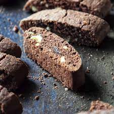

Biscotti Recipie for Trolls
Brenda's Lasangna Recipe

- 2 cups flour
-
- 4 oz pistacios
- 1/2 cup of Coca powder
- 1 tsp vanilla extract
- 1 tsp baking powder
- 1 cup of sugar
- 1 egg
- 1/3 cup of sugar
- 2 tsp nutmeg
- combine dry and wet ingredients in a large bowl
- once combined form oval shape 2 inches thick to place on partment lined baking sheet
- place in preheated 375 degree oven for 120-25 minutes or until cooked
- remove from oven and let cool for 30 minutes
- cut into buscotti strips and place back in oven for 12 minutes until desired level of doneness, if too soft can place back in oven further
- Enjoy